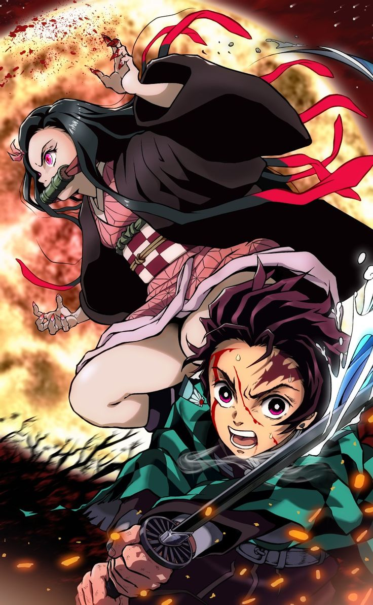

Arcos principais

1. Arco da Seleção Final
Tanjiro treina com Urokodaki e passa no exame para se tornar caçador de demônios.
Recebe sua espada Nichirin e conhece o corvo mensageiro.
2. Arco das Missões Iniciais
Conhece Zenitsu Agatsuma (medroso, mas poderoso no estilo do trovão) e Inosuke Hashibira (fera selvagem, usa duas espadas).
Enfrentam demônios como a Família Aranha no Monte Natagumo.
3. Arco do Trem Infinitobr
Ajudam o Hashira das Chamas, Kyojuro Rengoku, contra Enmu, um dos Doze Kizuki.
Rengoku morre em batalha contra Akaza, um Lua Superior.
4. Arco do Distrito do Entretenimento
Lutam ao lado da Hashira do Som, Tengen Uzui, contra os irmãos demônios Daki e Gyutaro.
Vitória suada; Tengen se aposenta por conta dos ferimentos.
5. Arco da Vila dos Ferreiros
Tanjiro ganha uma nova espada e enfrenta o Lua Superior 5 (Gyokko) e 4 (Hantengu) junto dos Hashiras Mitsuri (Amor) e Muichiro (Névoa).
Nezuko demonstra resistência ao sol — uma habilidade única entre os demônios.
6. Confronto contra Muzan
O grupo invade a Fortaleza Infinita, a base do rei dos demônios, Muzan Kibutsuji.
Vários Hashiras morrem em batalhas contra os Luas Superiores.
Tanjiro enfrenta Muzan com ajuda de todos os caçadores sobreviventes.
Muzan quase vence, mas Nezuko, agora humana, corre para o irmão.
Tanjiro se transforma brevemente em um "rei demônio", mas volta ao normal graças a Nezuko e seus amigos.